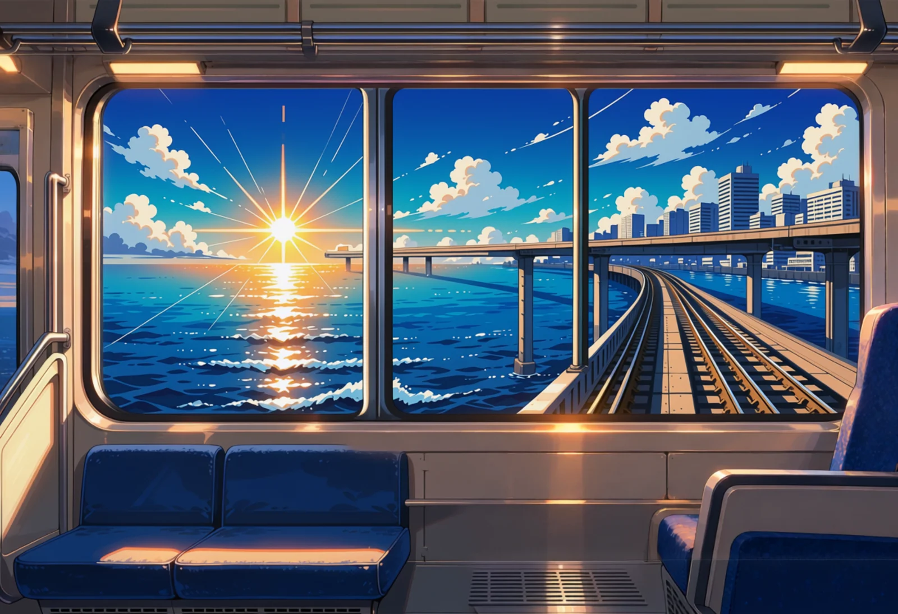
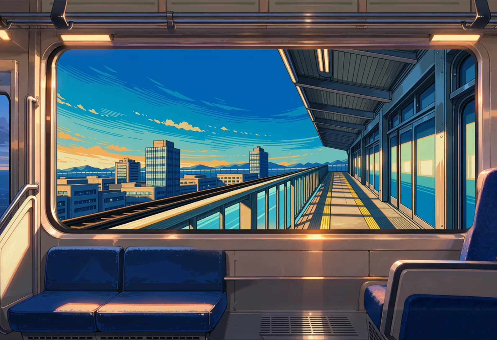
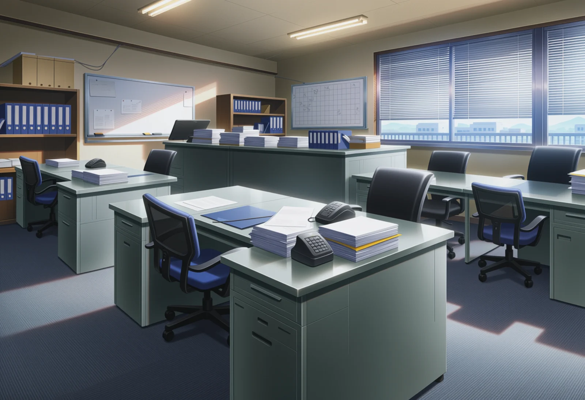
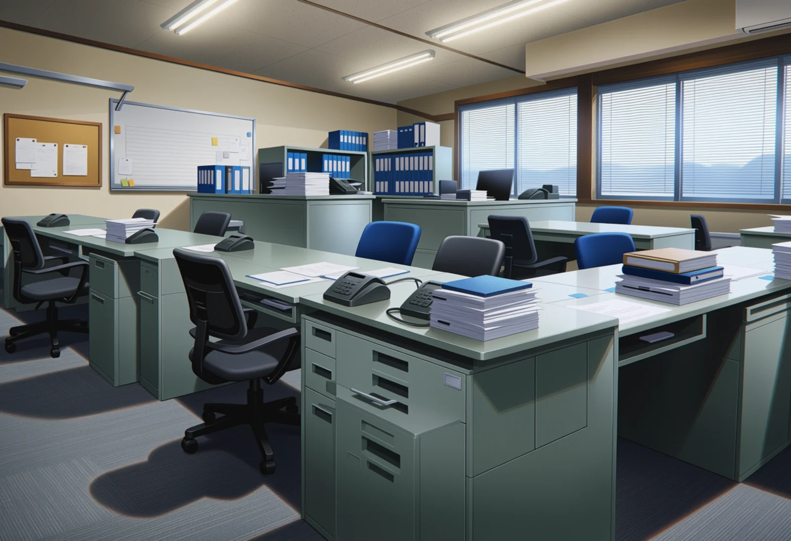
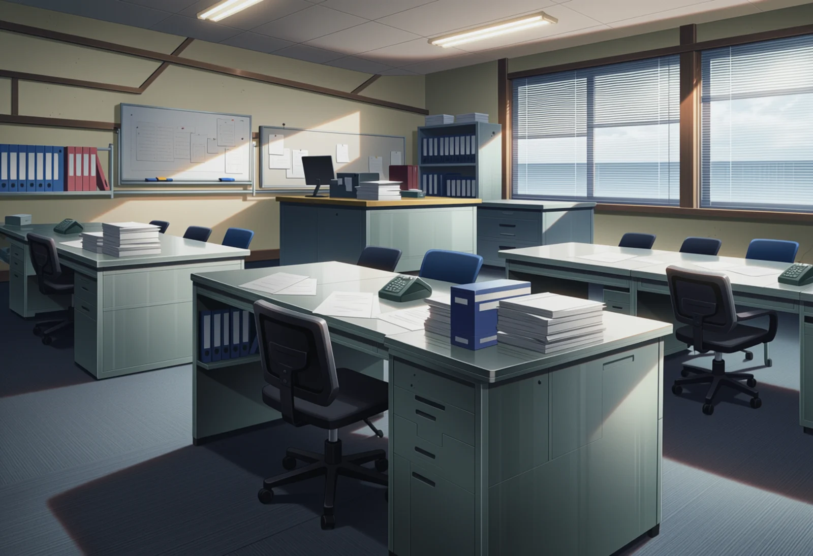

Day-1 locations
Round 3. The gate and copy room are picked. The monorail and Sales are redone after your notes, with composition control (a 3D blockout as a line or depth guide) and compositing. All drawn with RDBT Anima at the game's shape. Under each image: what the shot is meant to show, where the camera is, what must hold, and how it was made. Each set starts with the current game image in grey. Nothing is in the game yet. Click an image to enlarge; arrow keys step through, Esc closes.
Monorail: final approach, round 3
Redone after "it's literally a boat now" and "where is it going?". The shot is now the moment of the announcement 「まもなく、天川シティ中央駅です。お出口は右側です。」: the last stretch of guideway, the city close, then the platform on the right. Following your interior master, the angle is the straight-on right-hand window. Only two images passed my checks; each says how it was made. Not shown because they failed: the long aisle toward the front window from the Blender blockout (the beam reads as a road, water near the sill), the straight-on door view from the blockout (reads as standing on a platform), and every exterior shot of the train heading into the station (the model draws 5 to 8 cars instead of three, or puts the headlights toward the camera).

Current game image (for comparison)

comp-close-9306
Intent: The announcement plays: 「まもなく、天川シティ中央駅です。お出口は右側です。」 Out of the right-hand window he sees the city close by, then the platform.
Right-hand window on the last stretch: the second guideway right alongside at the same height on pillars in the water, the city close on the right, sea below. Flaws: the pasted view is drawn in a flatter, poster-like style than the room (starburst sun), the guideway has rail tracks instead of a monorail beam, and the view has its own window bars inside the real window.
Prompt
Room: anime screenshot, anime coloring, 2d, cel shading, clean lineart, detailed anime background art, hand-painted anime background, no humans, scenery, Interior view inside a monorail train, straight on angle at one big side window. Two empty blue seats below the window. | View: ... painted clouds, the view from a high monorail window: the calm sea below with sunlight glittering on the water, a concrete monorail beam on tall pillars running alongside, and on the right, close by, the waterfront of a city with tall office towers and an elevated station with a long flat roof. dominant clear sky blue and sea blue, broad white cloud and glass, sparse warm sunrise orange accents, bright hopeful light.
Negative

comp-platform-9301
Intent: The announcement plays: 「まもなく、天川シティ中央駅です。お出口は右側です。」 Out of the right-hand window he sees the city close by, then the platform.
Pulling in: the elevated platform right outside the window, roof, glass screen and yellow line, towers behind. Flaws: the platform is drawn in perspective along its length, as if looking forward, not side-on as a straight window would see it; the view is flatter than the room.
Prompt
Room: as above. | View: ... painted clouds, the view from a monorail window: an elevated station platform right outside, with platform screen doors, a long flat roof on white pillars and glass walls, office towers of a city behind it catching the morning sun, clear blue sky. dominant clear sky blue, broad white and glass, sparse warm morning orange accents, bright hopeful light.
Negative
Gate (security entrance)
Picked: gate-lobby-2103.

Current game image (for comparison)

gate-lobby-2103
Intent: Ishibashi stops him at the gate: a row of ID card gates with a guard post beside them.
PICKED (Jørgen). Full-height glass security doors with one open lane, a round atrium behind, and a guard podium on the left.
Prompt
masterpiece, best quality, score_9, score_8, score_7, year 2025, newest, highres, absurdres, very aesthetic, anime screenshot, anime coloring, 2d, cel shading, clean lineart, safe, no humans, scenery, background art for a visual novel, the huge entrance lobby of a Japanese conglomerate headquarters tower, camera at eye level approaching a row of waist-high glass-flap security speed gates for ID cards, one card reader on top of each gate, a security guard podium desk with a small monitor beside the gates on the left, a high double-height atrium beyond the gates with a bank of elevator doors at the back wall, polished stone floor, tall glass facade on the right, a large abstract wall relief without text, a few potted trees, cool morning light, dominant white stone and pale grey, broad glass blue, sparse navy and teal accents
Negative
worst quality, low quality, early, old, score_1, score_2, score_3, artist name, blurry, jpeg artifacts, bad anatomy, bad hands, missing fingers, extra fingers, long fingernails, claws, extra limbs, merged limbs, text, watermark, signature, 3d, realistic, photorealistic, render, chubby, nude, nsfw, child, loli, people, person, 1girl, 1boy, crowd, character, people, silhouette, passenger, readable text, letters, logo, brand name, signage text, duplicate objects, floating objects, impossible architecture, distorted perspective, warped lines, train station, ticket machines, railway platform, shop, bed
Copy room
Picked: copyroom-copier-4203.

Current game image (for comparison)

copyroom-copier-4203
Intent: The copier he has to get 30 sets out of, in a small room nobody visits.
PICKED (Jørgen). Framed by the door frame, so you're looking into a small, forgotten room. Copier in the middle, table and bins on the right.
Prompt
masterpiece, best quality, score_9, score_8, score_7, year 2025, newest, highres, absurdres, very aesthetic, anime screenshot, anime coloring, 2d, cel shading, clean lineart, safe, no humans, scenery, background art for a visual novel, a cramped windowless copy room in a Japanese office building, camera at eye level just inside the door looking into the room, (a large old bulky beige multifunction office copier as the centrepiece against the back wall:1.4), its lid closed, output trays with a small stack of copies, a sorter-stapler finisher on its side, a narrow worktable beside it with paper reams, a stapler and a box of staples, metal shelving with toner cartridges in boxes on the left wall, a recycling bin full of paper, no windows at all, one fluorescent ceiling panel, scuffed grey walls, cold flat fluorescent light, dominant pale grey-green walls, broad off-white paper and beige copier plastic, sparse green copier-panel glow and red toner-box accents
Negative
worst quality, low quality, early, old, score_1, score_2, score_3, artist name, blurry, jpeg artifacts, bad anatomy, bad hands, missing fingers, extra fingers, long fingernails, claws, extra limbs, merged limbs, text, watermark, signature, 3d, realistic, photorealistic, render, chubby, nude, nsfw, child, loli, people, person, 1girl, 1boy, crowd, character, people, silhouette, passenger, readable text, letters, logo, brand name, signage text, duplicate objects, floating objects, impossible architecture, distorted perspective, warped lines, large window, window view, sunlight, sky, open plan office, desk with computer, bed, sofa, green glowing floor
Sales, round 3
Redone after "ugly, saturated and a nonsensical room". Mid-morning, seen from the entrance: a real Japanese island layout (島型), grey steel desks in facing pairs, the section chief's desk at the head, phones and piles of paper, blinds half down, muted colours like copy room 4203. The layout comes from a Blender blockout used as a line control; the prompt is five short sentences. Plain short prompts without the control gave nicer light but classroom rows.

Current game image (for comparison)

sales-s2-lines-8301-strength0.7
Intent: About 10:30. He comes up from the basement to get a folder from Rei at her desk; a second salesperson could be a witness.
Desk islands of grey steel desks, a phone at the seats, document piles, a grid whiteboard and blinds half down. Flaw: a few patches of sun on the carpet although the sky is overcast.
Prompt
anime screenshot, anime coloring, 2d, cel shading, clean lineart, detailed anime background art, hand-painted anime background, no humans, scenery, The sales department of a Japanese company office, seen from the entrance. Grey steel desks pushed together in facing pairs make three long islands, and the section chief's desk sits across the head of each island. Office chairs, a desk phone at every seat, binders and piles of documents. A whiteboard on the back wall. A row of windows on the right with the blinds half down, overcast sky outside. Soft even fluorescent light, grey carpet, muted grey and off-white colours.
Negative
worst quality, low quality, early, old, score_1, score_2, score_3, artist name, blurry, jpeg artifacts, bad anatomy, bad hands, missing fingers, extra fingers, long fingernails, claws, extra limbs, merged limbs, text, watermark, signature, 3d, realistic, photorealistic, render, chubby, nude, nsfw, child, loli, people, person, 1girl, 1boy, crowd, character, readable text, logo

sales-s2-lines-8303-strength0.7
Intent: About 10:30. He comes up from the basement to get a folder from Rei at her desk; a second salesperson could be a witness.
Two islands of desks pushed together, phones and piles at every place, a whiteboard and cork board on the back wall, cabinets with binders. Flaw: a hard chair shadow on the carpet in the foreground.
Prompt
anime screenshot, anime coloring, 2d, cel shading, clean lineart, detailed anime background art, hand-painted anime background, no humans, scenery, The sales department of a Japanese company office, seen from the entrance. Grey steel desks pushed together in facing pairs make three long islands, and the section chief's desk sits across the head of each island. Office chairs, a desk phone at every seat, binders and piles of documents. A whiteboard on the back wall. A row of windows on the right with the blinds half down, overcast sky outside. Soft even fluorescent light, grey carpet, muted grey and off-white colours.
Negative
worst quality, low quality, early, old, score_1, score_2, score_3, artist name, blurry, jpeg artifacts, bad anatomy, bad hands, missing fingers, extra fingers, long fingernails, claws, extra limbs, merged limbs, text, watermark, signature, 3d, realistic, photorealistic, render, chubby, nude, nsfw, child, loli, people, person, 1girl, 1boy, crowd, character, readable text, logo

sales-s2-lines-8305-strength0.7
Intent: About 10:30. He comes up from the basement to get a folder from Rei at her desk; a second salesperson could be a witness.
Islands with a desk across the head of the far one (the section chief's place), two whiteboards, binders. The windows look out on the sea instead of the building across the street. Light patches on the floor.
Prompt
anime screenshot, anime coloring, 2d, cel shading, clean lineart, detailed anime background art, hand-painted anime background, no humans, scenery, The sales department of a Japanese company office, seen from the entrance. Grey steel desks pushed together in facing pairs make three long islands, and the section chief's desk sits across the head of each island. Office chairs, a desk phone at every seat, binders and piles of documents. A whiteboard on the back wall. A row of windows on the right with the blinds half down, overcast sky outside. Soft even fluorescent light, grey carpet, muted grey and off-white colours.
Negative
worst quality, low quality, early, old, score_1, score_2, score_3, artist name, blurry, jpeg artifacts, bad anatomy, bad hands, missing fingers, extra fingers, long fingernails, claws, extra limbs, merged limbs, text, watermark, signature, 3d, realistic, photorealistic, render, chubby, nude, nsfw, child, loli, people, person, 1girl, 1boy, crowd, character, readable text, logo